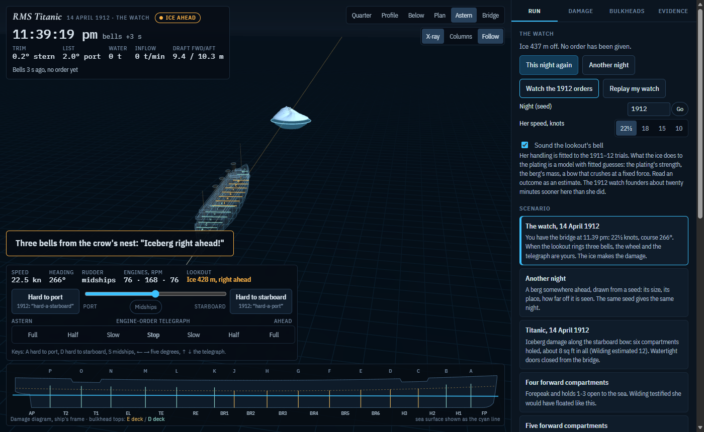
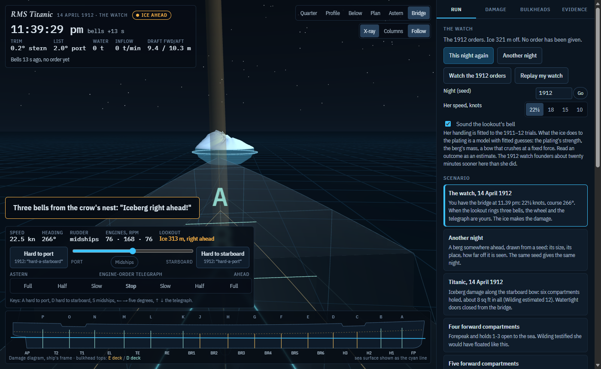
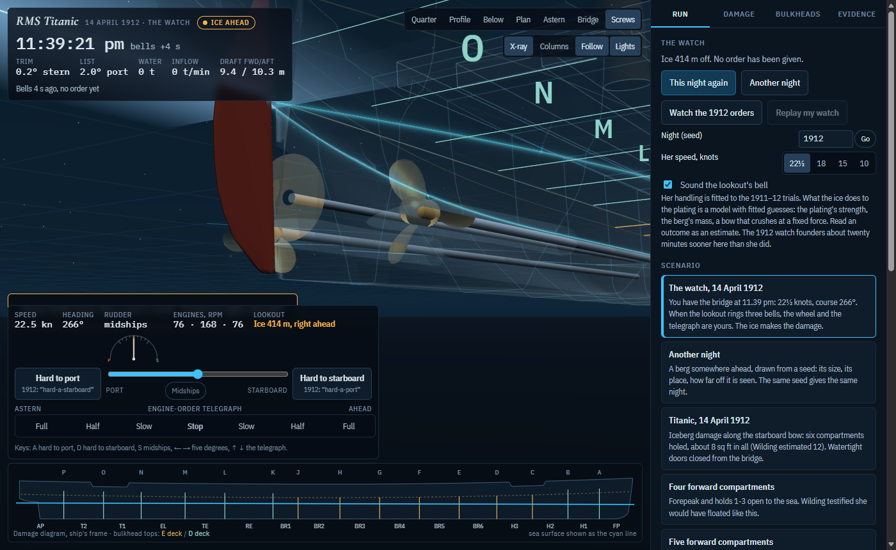
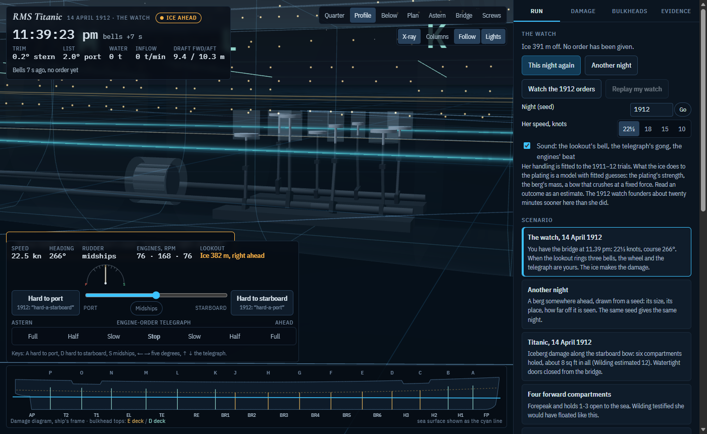
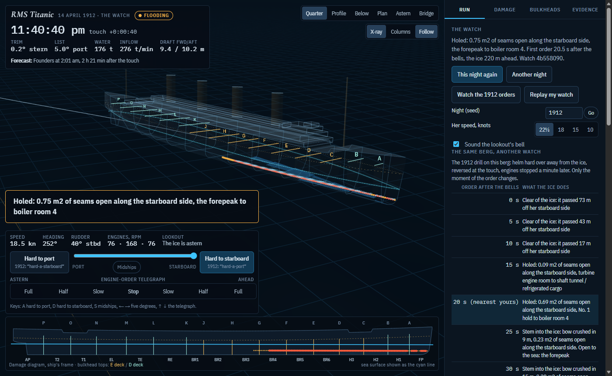
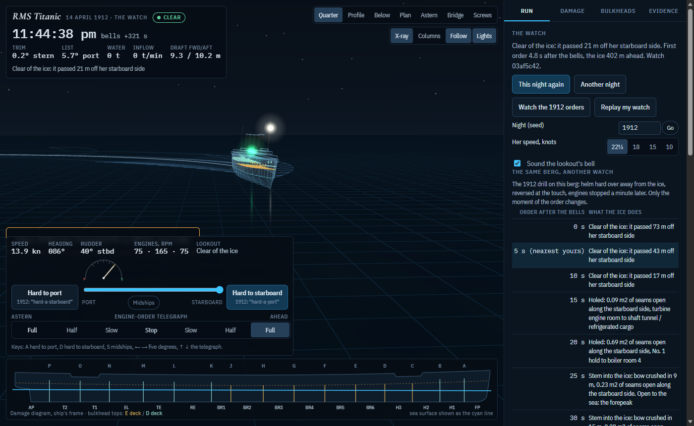
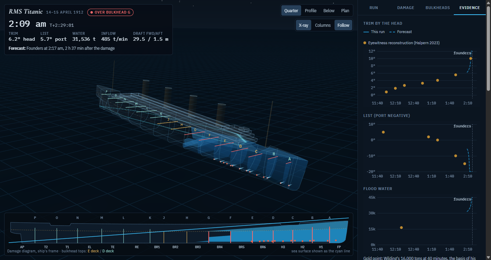

A flooding and ship-handling simulator. User Guide
First version (v1) · 17 November 2026 For the build at commit 2ec58b5
titanic-sinking-simulator · MIT licenceDraft for review
Contents
What is in this guide
1The simulator in one pagewhat it is, what it models, what it does not
2Quick start: your first watcheight steps from opening the page to the forecast
3The screenreadouts, the 3D view, the panel, the damage diagram
4The Bridge: wheel and telegraph1912 helm orders, engine orders, keys
5Playing a watchthe bells, the outcomes, the forecast, replays and seeds
6Scenarios and what-ifsdamage presets, the hole tool, bulkheads and doors
7Her systemscoal to steam to screws, lights, doors and pumps
8The evidencethe run against the eyewitness record
9How the model works, brieflythe physics, the calibration, the honest limits
10Referencekeys, glossary, running it yourself
About this draft
This is the first version of the guide. The screenshots come from the simulator's own test runs and may predate small
changes to the panel (the Systems tab's Pumps row, for example). Names of buttons and tabs are as they appear in the
current build.
Chapter 1
The simulator in one page
You stand the watch on the bridge of RMS Titanic at 11:39 pm on 14 April 1912. She makes 22½ knots on a
course of 266°. Somewhere ahead is ice. What you order, and when, decides what the ice does to her, and the flooding
model then decides whether and how she sinks.
What it models
Flooding through 16 watertight compartments, each split port and starboard and above and below E deck:
64 spaces joined by 290 water paths (hull openings, doors, deck openings, the tops of the bulkheads).
Her pose: heave, trim and list as a damped rigid body, from the drafts of the night.
Handling: her turning and stopping, fitted to the trial record of the three sister ships.
The iceberg: a body of ice she can strike, graze, dent or crush her bow against. The damage is made by the
contact, not painted on.
Her machinery: coal, fires in six boiler rooms, steam, two engines and a turbine, steering engines,
dynamos, watertight doors and bilge pumps, each failing when water reaches it.
What it is calibrated to
The flooding is fitted to an eyewitness-derived timeline of her trim (Halpern, 2023) and her foundering about
160 minutes after the collision. The reconstructed 1912 watch founders about 157 minutes after the touch. Cases the
fit never saw (four or five compartments open, the Hawke collision of 1911, Britannic in 1916) are kept as checks.
Read outcomes as estimates
Several inputs are informed guesses with a physical meaning: the strength of the plating, the berg's mass, the force
at which a bow crushes, some of the engineers' practice. The model labels each of them in its code. A night's outcome
is a well-founded estimate, not a verdict.
What it does not do
No break-up of the hull girder: her last minute is a plunge, not the break at about 2:17.
No trapped air, and no buoyancy from the superstructure above B deck.
Most damage presets lie stopped and unpumped; only the 1912 run and a played watch work the pumps.
Chapter 2
Quick start: your first watch
Ten minutes from opening the page to your first forecast.
Open the simulator. It opens on The watch, 14 April 1912, with the Bridge on the stage. Before the
bells nothing is in sight, and the clock runs at real time.
Turn the sound on (Run tab) if you want the lookout's bell, the telegraph's gong and the engines' beat. Sound
starts after your first click or key, as browsers require.
Wait for the bells. Three bells from the crow's nest: "Iceberg right ahead!" The banner reads
ICE AHEAD and the Lookout readout gives the range.
Give your order. Put the wheel over (Hard to port or
Hard to starboard, or keys A / D) and ring the telegraph (↑↓). The time from the bells to your first order is your reaction time.
Watch her answer. A ship of 46,000 tons turns slowly: she needs way on her for the rudder to bite, and the
first seconds go to the helm going over.
Read the outcome. She clears the ice, is dented, has seams opened along her side, or runs her stem into it.
Read the forecast. After the ice the core forecasts the sinking ("Founders at …") and lists how other
reaction times would have fared on the same night.
Try again.This night again repeats the same berg; Another night
draws a new one; Watch the 1912 orders plays the reconstructed orders of the night.
Tip
On the 1912 night the order came about 20 seconds after the bells, and she was holed along the starboard side. An
order within about 15 seconds clears the berg; much later, and she strikes stem first.

The watch at the bells: the readouts, the
view from astern, the Bridge panel and the damage diagram.
Chapter 3
The screen

The screen on a
watch: readouts top left, view controls top right, the Bridge bottom left, the panel on the right, the damage diagram
below.
Readouts (top left)
Readout
What it shows
Clock
Ship's time, with seconds since the bells on a watch.
Trim · List
Degrees by the bow or stern, and to port or starboard.
Water · Inflow
Tons of sea water aboard, and tons a minute coming in.
Draft fwd / aft
Metres at the bow and the stern.
The view (top right)
Control
Effect
Quarter · Profile · Below · Plan · Astern
Camera positions around and under the ship.
Bridge
From her bridge, looking ahead: what the officer of the watch saw.
Screws
Under the stern: the three screws turning with their shafts, and the rudder.
X-ray · Columns
See-through hull showing the water in each space; water columns by compartment.
Follow · Lights
Keep the camera on her; show her lights (they fail when her dynamos do).
The panel (right)
Five tabs: Run (the watch, scenarios, time, forecast, log), Damage (the hole tool and openings),
Bulkheads (doors and bulkhead heights), Systems (her machinery) and Evidence (the run against
the record). Chapters 5 to 8 take them in turn.
The damage diagram (bottom)
Her profile in the ship's frame: the fifteen bulkheads lettered A to P, the compartments from the forepeak (FP)
through the holds (H1 to H3), the six boiler rooms (BR6 to BR1), the engine, turbine and electric rooms, to the
after peak. Water fills each compartment as it comes in; the cyan line is the sea surface.
Chapter 4
The Bridge: wheel and telegraph
Two controls ran the ship in 1912: the wheel, through the steering engines, and the engine-order
telegraph to the engine room. The Bridge panel gives you both.
The wheel, and the 1912 orders
In 1912 helm orders were given as tiller orders, the reverse of today's. "Hard-a-starboard" put the tiller to
starboard, the rudder to port, and swung her head to port. Each button says both:
Button
The 1912 order
Her head goes
Hard to port
"hard-a-starboard"
to port
Hard to starboard
"hard-a-port"
to starboard
Midships
"midships"
rudder centred
The slider sets any angle between; the rudder dial shows where it is. The steering engines move it at a few degrees
a second, and they need steam.
The engine-order telegraph
Seven positions, Full, Half and Slow astern, Stop, and Slow, Half and Full ahead: about 75, 50 and 30 revolutions
a minute. The two reciprocating engines drive the wing screws; their exhaust drives the turbine and the centre screw,
ahead only, and only at Half or Full with both engines above 40 rpm. Reversing an engine takes time: it runs down,
the valve gear is reversed, and it comes up astern.
Keys
Key
Order
A · D
Hard to port · hard to starboard
S
Midships
← · →
The wheel five degrees to port · to starboard
↑ · ↓
The telegraph one step ahead · astern
Seamanship in the model
The rudder works only on water moving past it: stopped, she will not turn however hard you put it over, and going
astern the rudder works the other way, weakly. The faster she goes the faster she turns, but the further she runs
while turning.

The Screws view: the wing screws turn
outward going ahead; the centre screw sits in its aperture before the rudder.

The engines, drawn from the model's
revolutions.
Chapter 5
Playing a watch
The bells and your reaction time
The lookout rings three bells when he sees the ice. On the 1912 night that was about 500 yards off. Your reaction
time runs from the bells to your first order. An order given before the bells counts as hindsight: it is
logged, but it is not a reaction.
The four outcomes
Outcome
What happened
Clear
She passed the ice, and the readout says how far off her side it went.
Dented
She touched; plates dented, but no seam opened. No water.
Holed
Seams opened along her side, compartment by compartment: the 1912 kind of damage.
Stem into the ice
She struck head-on: the bow crushes and its compartments open. Wilding told the inquiry she would have come in with her bow crushed 80 to 100 feet.
Clear: an early order.

Holed along the starboard side.
After the ice: the forecast
Once the encounter is over, the core forecasts the sinking from the state of the moment: "Founders at 2:16 am,
2 h 37 min after the damage", or that she floats. The clock is then free, and you can let time run faster. The table
of other watches shows the same night with the order given at other times after the bells.
Nights, seeds and levels
A night is its seed and its orders. Every order is logged with the step it was given at, so
Replay my watch plays it again exactly. The address bar carries the night
(for example #night=1912), so a link reproduces it.
Another night draws a berg from a seed: its size, its place relative to her track, and the range at which
it is seen. Type a seed in Night (seed) and press Go to choose one.
The ice on a drawn night sets how hard the nights are: Seen early, Any night (the default),
or Like 1912, seen late and near her track.
Her speed (22½, 18, 15, 10 knots) sets the speed she is making when the watch begins.
How hard is it?
Over 200 drawn nights on the default level, with the 1912 drill (helm hard over, reversed at the touch), an order at
the bells clears the ice 96 % of the time; at 20½ seconds, 49 %. With no order at all she strikes on 72 % of nights,
and stem-first on 44 %.
Chapter 6
Scenarios and what-ifs
Besides the watch, the Run tab's Scenario cards load damage cases that start at the collision,
with the ship stopped. They are the cases the flooding model was built and checked on.
Scenario
What it is
In the model
Titanic, 14 April 1912
The iceberg damage along the starboard bow: six compartments holed, about 8 sq ft in all; doors closed; boiler rooms 5 and 4 pumped as they were
Founders at 2:16 am
Four forward compartments
Forepeak and holds 1 to 3 open. Wilding: she would have floated
Floats, 2° by the head
Five forward compartments
Add boiler room 6
Founders
Olympic and HMS Hawke, 1911
Rammed near the stern; two after compartments flooded
Floats; she reached port
Britannic, 1916 (approx.)
A mine on the starboard bow; failed doors; open portholes
Founders in about 50 min (record: about 55)
Undamaged hull
No damage: make your own with the hole tool
Floats
The Damage tab
Choose the hole tool and a hole size, then tap the hull below the waterline to open it. Every opening is listed,
and Remove all openings clears them. Before the collision holds the settings that
apply from the start.
The Bulkheads tab
The watertight doors (Close all from the bridge, Open all), the
height of the bulkheads, and the table of the fifteen bulkheads: between which compartments each stands, its top
deck, its doors, and the water over it. Raising the bulkheads is the classic what-if: to D deck it buys minutes; to B
deck she floats in this model (Wilding thought she would still sink).
What-if
Open the 1912 damage, then leave the watertight doors open: in this model she sinks later, about 2 h 59 min,
because the water spreads aft low down instead of tipping the bow.
A stem strike: the bow
crushed in, the forward compartments open to the sea.
Chapter 7
Her systems
Her machinery needs each other, so failures cascade. The Systems tab shows each link and its state:
working, short, or
failed.
Link
Needs
Fails when
Coal · Fires
Coal in the bunkers
Water reaches a boiler room's furnaces; the bunkers run dry; the fires are drawn
Steam
Fires
Pressure falls as fewer fires burn than she uses
Engines · Turbine
Steam; a dry engine room
Water at the crankshafts; the turbine room flooded
Screws · Way
Engines; water round the screws
Her stern rises and lifts them out
Steering
Steam; way on her
No steam: the rudder stays where it is
Dynamos
Steam; a dry dynamo flat
She goes dark; the emergency dynamos on D deck keep a little light
Doors
Current, to drop them from the bridge
In the dark only their floats and levers drop them
Pumps
Steam (no current)
Their own room floods; the steam fails
Orders to the stokehold and engine room
Draw the fires in one boiler room or all of them. The steam already raised carries the load a while, then
the engines stop, then the dynamos, then the steering gear. On a watch the order goes in the log.
Coal in her bunkers (As loaded, 2 h left, 15 min left) applies on restart and to the
next watch.
The pumps
Her steam bilge pumps could put about 1,700 tons an hour overboard. On a watch the engineers put a room's own pumps
on it about five minutes after water comes in, and lead pumps from dry rooms to it through the bilge main half an hour
later. A pump stops when its own room floods. Against the 1912 damage they buy about two and a half minutes. Against
a small leak they can hold a room dry.
Blowing off
When the engines stop with every fire lit, the safety valves lift: steam roars from the escape pipes on her funnels
until the stokers bank the fires, within the hour. With sound on, you hear it.

Her navigation lights, by
the rules of 1910; they go out with her dynamos.
Chapter 8
The evidence
The Evidence tab plots the run against the record: her trim by the head, her list, and the flood water
aboard. The gold curve is the eyewitness reconstruction; the blue is the run; the dashed line is the forecast to the
end.

The Evidence tab during the 1912 run.
The timeline check
Moment
Witnessed
Model
Trim at 12:10 · 12:55 · 1:20 · 2:15
1.8° · 3.2° · 4.0° · 10°
1.6° · 3.5° · 4.1° · 10.1°
Water over bulkhead F
12:55
12:56
Bridge under
2:15
2:14
Foundered
2:20 (the break about 2:17)
2:17
The tab also lists Cases the fit never saw, says How it works, and names What it leaves out.
The list
The model gets a small port list, the coal list of the evening amplified by free surfaces, but not the starboard list
seen just after the collision or the heavy port list late in the sinking. The candidates are worked out in the
project's notes.
Chapter 9
How the model works, briefly
Flooding
Water moves between the 64 spaces and the sea through orifice and weir laws, with a free surface shared by the two
halves of an open space. Her pose follows from the water's weight and where it lies. Four numbers were fitted to the
record: the aggregate opening (0.75 m², about 8 sq ft, spread over six compartments by Hackett and Bedford's flooded
capacities), and three widths and areas for the paths along and through E deck. The fit includes the pumps as they
were worked on the night.
Handling
A standard manoeuvring model (MMG) with her hull, three screws and rudder. Four numbers are fitted to a consensus of
the trial record of Olympic, Titanic and Britannic: the two points of turn in about 37 seconds, the tactical diameter,
and the stop from 60 revolutions. The resistance follows Holtrop's method; the screws going astern follow the
Wageningen B-series' four-quadrant data. The screws' positions were measured on the builder's side plan of 1911.
The iceberg
The berg is a free body of ice. Where her side presses into it, plating dents against the ice's crushing pressure,
and riveted seams open beyond a set dent. The opened area is fitted so that the reconstructed 1912 watch makes the
same opening as the calibrated damage. Head-on, the bow crushes at a force rising with the depth crushed, from
section-based crushing laws for her bow.
Determinism
The core is deterministic: a fixed step of a quarter second and fixed-order sums. A night replays bit for bit on
the same JavaScript engine. Two engines agree to many digits but not to the last bit, because library functions
such as Math.pow differ.
Where it is least certain
The ice's crushing pressure at large contact areas, the berg's mass, the plating's strength, and the 1912 point
itself, which grazes the edge of a stem strike: a metre either way changes the damage a good deal.
Chapter 10
Reference
Running it yourself
The built site is in the project's dist/ folder: serve it with any static web server and open it in
Edge, Chrome or another current browser. Rebuild it from the sources with node tools/build_site.js (no
installation needed). The headless tools run the same models without the browser:
Command
What it does
node tools/night_run.js 1912 auto sink
The 1912 watch on its orders, then the sinking
node tools/night_sweep.js 200
How hard the drawn nights are, 200 of them
node tools/validate.js
The validation table
node tools/systems_tests.js
Each system made to fail, and what follows
Glossary
Term
Meaning
Trim · List
Her tilt fore and aft (by the head is positive) · from side to side
Bulkhead
A watertight wall across the hull; fifteen, lettered A (forward) to P
Compartment
The space between two bulkheads: FP, H1 to H3, BR6 to BR1, the engine rooms, the after holds
Way
Her motion through the water; a rudder needs it
Telegraph
The bridge's dial for engine orders, rung to the engine room
Wing screws
The two outer propellers, on the reciprocating engines; the centre screw is on the turbine
Seed
The number a drawn night is made from; the same seed gives the same night
Sources
The British and American inquiries of 1912; Halpern's eyewitness reconstruction (2023) and articles; Hackett and
Bedford (1996); the trial record of the three sisters; The Shipbuilder and Engineering (1911); the Wageningen
B-series (MARIN, via Roddy, Hess and Faller, 2006). Each number in the model names its source, or says it is a guess,
in the project's research notes.
Colophon
User Guide v1, 17 November 2026: a first draft for review. Built from the project's own documentation and test runs.